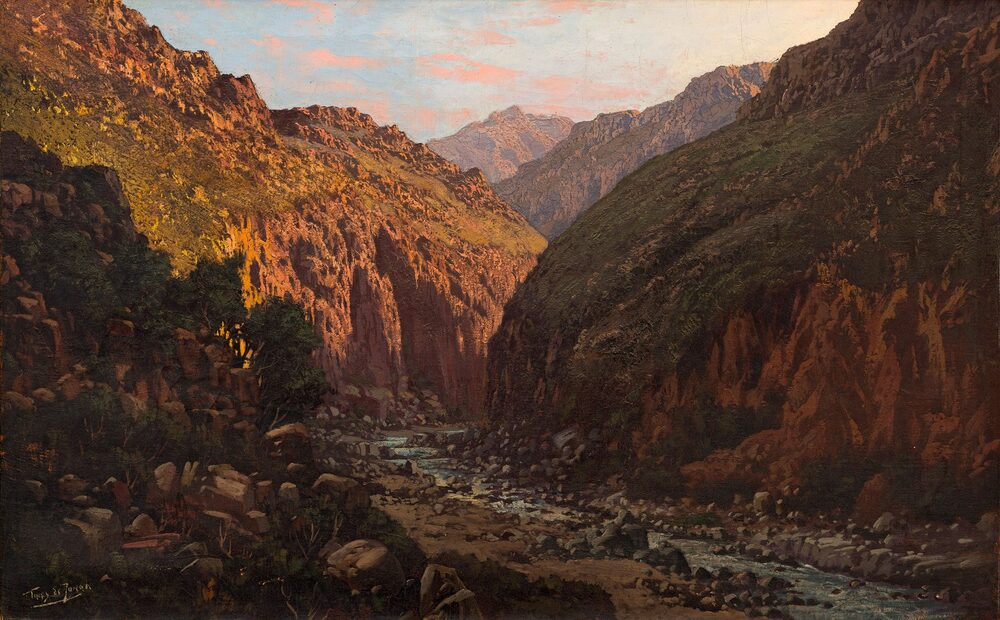
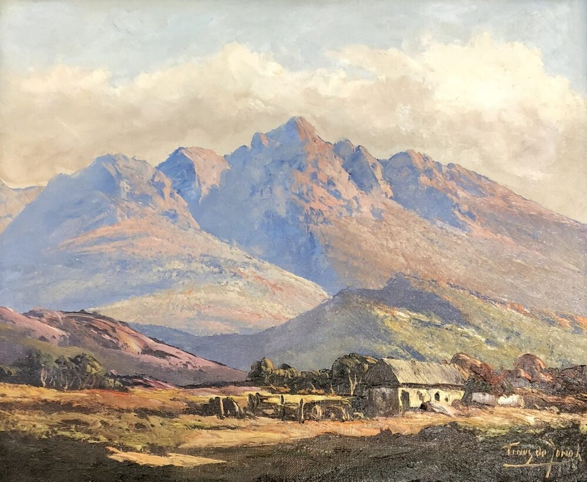

B2 · Travel
The Text
Play the audio and follow along, then read it again on your own. Hover over a highlighted word to see what it means.
Listen & Read
Cape Town
A city between a mountain and an ocean, and what a visitor should actually plan for.
Cape Town sits in an unusually dramatic place. Table Mountain rises almost directly behind the city center, flat-topped and often wrapped in cloud, and the Atlantic runs along the other side. The result is a city you can never quite get lost in, because the mountain tells you which way you are facing. It has been a favorite destination for travelers for a long time, and the reasons are not complicated: the setting, the food, and a history that the city has become considerably more willing to talk about.

The calendar is busy for most of the year. The Cape Town International Jazz Festival draws musicians and audiences from across the continent and beyond, and it remains the event most visitors try to plan around. The city also runs a steady programme of smaller music, film and food events, so it is worth checking what is on before you fix your dates rather than after.
For art, the obvious stop is the Zeitz Museum of Contemporary Art Africa, built inside a converted grain silo on the waterfront. It shows contemporary work from across Africa and its diaspora, it changes its exhibitions often, and the building itself — the silo's concrete tubes cut open into a central atrium — is worth the entry on its own. For the city's history rather than its art, the District Six Museum is the more important visit: it documents the neighborhood whose residents were forcibly removed under apartheid, and it is largely assembled from what those residents themselves kept.
The food is the thing most visitors underestimate. Cape Town has everything from street vendors to restaurants with long waiting lists, but the dishes worth seeking out are the Cape Malay ones — bobotie, bredie, koeksisters — which come from the cooking of people brought to the Cape as slaves from Southeast Asia and which have been part of the city's food for three centuries. The seafood is excellent and genuinely local. The wine regions begin less than an hour away.
As for the outdoors, Table Mountain can be walked or ridden. The cable car is quick and the queue is long; Platteklip Gorge, the most direct walking route, is a steep two hours and should not be attempted without water and an eye on the weather, which changes fast and has caught out a great many confident people. Kirstenbosch, on the eastern slope, is the gentler option — a botanical garden of indigenous plants with a walkway that runs through the tree canopy. Both are best done early, before the cloud settles on the summit.
One practical note that guidebooks tend to bury: Cape Town is a city of sharp inequality, and ordinary precautions matter. Ask locally which areas are fine to walk in after dark, keep your phone out of sight on the street, and use a taxi app rather than an unmarked car at night. None of this should put anyone off. It is simply the kind of thing that is easier to hear before you arrive than afterwards.
Most visitors who have the time rent a car, and it is the right decision. The peninsula drive south — Hout Bay, Chapman's Peak, Cape Point — is one of the great coastal roads anywhere, and the wine towns inland, Stellenbosch and Franschhoek, are close enough to do in a day. Book the car before you fly; the rates at the airport desk on arrival are rarely the good ones.

What stays with people afterwards is usually not a single sight. It is the combination — a mountain at the end of the street, cold water on one side and wine country on the other, and a city that has been through a great deal and is still working out what it wants to be.
Vocabulary
- flat-topped — having a level summit rather than a peak
- to draw — to attract people to a place or event
- programme — a planned series of events
- diaspora — a people scattered from their original homeland, and their descendants
- atrium — a tall open space rising through the middle of a building
- forcibly removed — made to leave by force of law or police action
- apartheid — South Africa's former system of enforced racial segregation
- to seek out — to look for something deliberately rather than wait to meet it
- canopy — the upper layer of branches and leaves in a forest
- to catch someone out — to take someone by surprise, usually to their cost
- inequality — the unequal distribution of wealth and opportunity
- to put someone off — to discourage someone from doing something
- peninsula — a strip of land almost surrounded by water
Interactive Exercises
Practice
Complete each exercise, then click Submit to see your score and an explanation for every answer.
Speaking & Writing
Discussion
There are no right answers here — use these to practice speaking, or write a short answer to each.
- The writer includes a paragraph on safety that guidebooks “tend to bury”. Is it more respectful to a place to mention such things or to leave them out?
- Cape Malay food is described through its origins in slavery. Does knowing where a dish comes from change how you eat it?
- The District Six Museum is built from what residents kept. What would a museum of your own neighborhood be made of?
- “A city that has been through a great deal and is still working out what it wants to be.” Does that describe anywhere you know?
- Write about 150 words recommending a city you know well to someone who has never been — including one honest warning.